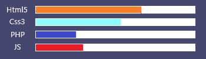

Portfolio-Jonathan
Home
Hallo mijn naam is Jonathan Luijendijk, ik ben 17 jaar oud.
En op deze website kunt uw alle relevante informatie over mij vinden.
About
Ik volg op dit moment de opleiding software developer op het Techniek College Rotterdam.
Ik heb basiskennis van Html5, Css3, PHP en JavaScript en ik ga volgend school jaar September 2022 Stage Lopen
Projects
Tijdens mijn opleiding software developer heb ik iederen periode gewerkt aan een project.
Tijdens deze projecten heb ik basiskennis opgedaan van Html5, Css3, PHP en JavaScript.
Daarnaast heb ik mij in groepsverband bezig gehouden met Front-end en Back-end.
Wij hebben login en registratiesystemen en websites gemaakt. Tijdens deze projecten hebben wij de Scrumwerkwijze gehanteerd.
Deze werkwijze heeft ervoor gezorgd dat ik meer structureert heb in het uitvoeren van werkzaamheden.
Daarnaast hebben de projecten mij geleerd goed samen te werken met anderen.

Contact
Uw kunt contact met mij opnemen via email of linkedin.
Email: 9014200@student.zadkine.nl
Linkedin: https://www.linkedin.com/in/jonathan-luijendijk/